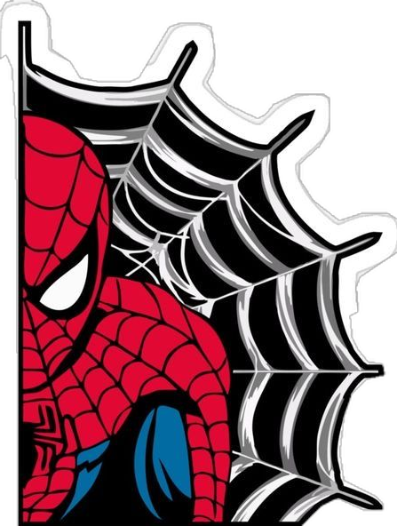

LABORATÓRIO DE QUÍMICA
Tabela periódica
118 elementos para explorar. Toque em um deles para abrir seus dados.

EXPLORE OS ELEMENTOS
118 elementosEncontre. Toque. Descubra.
PERÍODOS · GRUPOS Deslize para explorar
As cores identificam as famílias. Selecione um elemento para ver seus dados e percorra a tabela com as setas do teclado.
Dados dos elementos: PubChem.